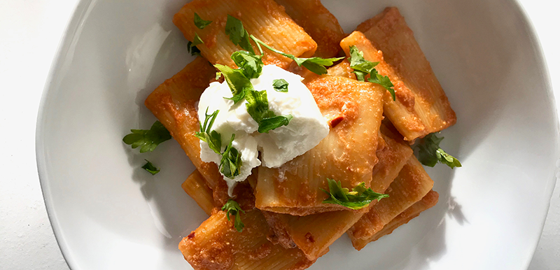
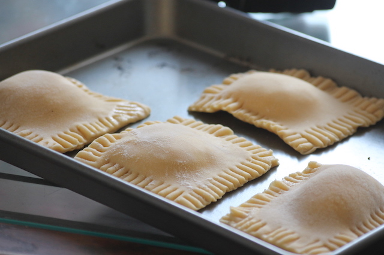
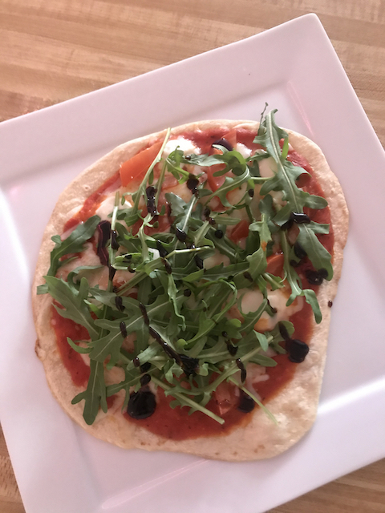

Welcome to Lucinda's Recipes!
Broaden your food horizons and get inspired with these simple recipes for any occasion.
Featured Recipes
Weekend Treat
Raviolo
This ravioli recipe is not only super tasty, but is a lot of fun to make. You can easily customize its contents, from creamy spinach and ricotta, to savory bolognese. This dish is perfect to share with friends or save in the fridge.
Quick & Easy
Pan Pizza
Have you ever been craving pizza but can't afford to pay those hefty delivery fees? This fun twist on a classic Italian favorite will satisy your cravings without breaking the bank. Pan pizza is a quick, simple, and healthy alternative.